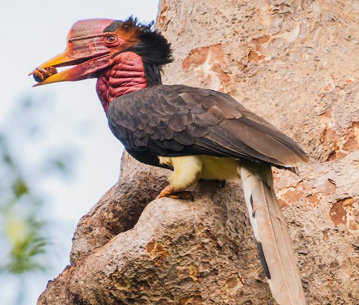

Critically Endangered
Critically Endangered
Malayan Tiger
Panthera tigris jacksoni
Fewer than 150 individuals remain. Malaysia's national symbol faces extinction from habitat loss, poaching, and declining prey populations.
 Critically Endangered
Critically Endangered
Sumatran Rhinoceros
Dicerorhinus sumatrensis
One of the world's rarest mammals. Fewer than 80 individuals survive globally, with a tiny remnant population in Sabah, Borneo facing near-certain extinction.
 Endangered
Endangered
Bornean Pygmy Elephant
Elephas maximus borneensis
The smallest elephant in Asia, found only in Sabah and north Kalimantan. Approximately 1,500 individuals remain, threatened by palm oil expansion.
 Endangered
Endangered
Proboscis Monkey
Nasalis larvatus
Endemic to Borneo, famous for their distinctive large noses. Found only in coastal mangroves and riverine forests, their habitat is rapidly disappearing.
 Endangered
Endangered
Malayan Tapir
Tapirus indicus
The largest of the four tapir species, with a distinctive black-and-white pattern. Found in the rainforests of Peninsular Malaysia, threatened by deforestation.
 Vulnerable
Vulnerable
Malayan Sun Bear
Helarctos malayanus
The world's smallest bear. Threatened by deforestation, poaching for bile, and capture for the exotic pet trade throughout Southeast Asia.
 Vulnerable
Vulnerable
Sunda Pangolin
Manis javanica
The most trafficked mammal in the world. Pangolins are heavily targeted by poachers for their scales, used in traditional medicine across Asia.
 Endangered
Endangered
Bornean Orangutan
Pongo pygmaeus
One of humanity's closest relatives. Found only in Borneo, their population has declined by over 50% in the last 60 years due to deforestation.

Critically EndangeredHelmeted Hornbill
Rhinoplax vigil
Prized for their unique solid casque, helmeted hornbills are heavily poached for the illegal wildlife trade, earning the nickname "ivory of the forest".